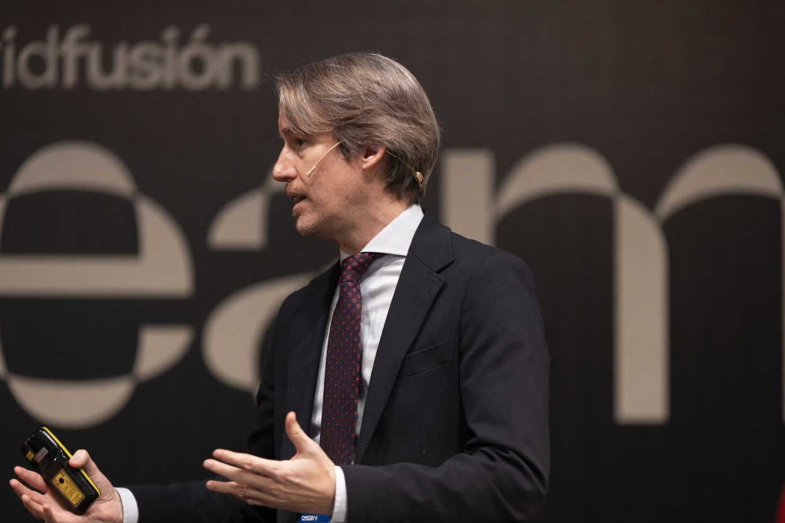

Una misma pregunta, durante dos décadas: cómo la tecnología cambia la forma en que accedemos a la realidad.
Periodismo, transformación digital, consultoría estratégica e inteligencia artificial. Un recorrido orientado a entender — antes que aplicar — qué cambia cuando cambia el medio.

Director de Soluciones de IA para comunicación y marketing · LLYC
BaseMadrid · España
ReconocimientosLinkedIn Top Voice
Divulgador de IA generativa y comunicación digital
Español · Inglés · Francés
En la redMi trayectoria profesional ha estado marcada por una misma pregunta: cómo cambia la tecnología la forma en que las personas acceden a la información y construyen su percepción de la realidad.
Llevo más de veinte años trabajando en la intersección entre periodismo, comunicación digital y estrategia. Empecé como redactor en RACE.net en el año 2000 y, un año después, en Cadena COPE, donde durante 16 años ocupé responsabilidades editoriales y de dirección — redactor, editor y presentador de la primera hora de la mañana, subdirector de informativos, editor jefe de COPE.es y, finalmente, Chief Digital Officer del grupo, dirigiendo el área digital de COPE, Cadena 100, Rock FM y Megastar FM.
En 2016 me incorporé a LLYC, donde he liderado primero la Gerencia de Comunicación Digital y, después, la Dirección de Influencia y Comunicación Digital. Desde febrero de 2025 dirijo las Soluciones de IA para comunicación y marketing: la estrategia, diseño y ejecución de proyectos que integran inteligencia artificial en las funciones de comunicación, reputación y marketing de grandes organizaciones.
Compagino mi actividad profesional con la docencia universitaria — Universidad Carlos III de Madrid, UNIR, UNIE, Universidad Villanueva, Universidad Francisco de Vitoria, IE Business School, IE School of Human Sciences and Technology y Universidad CEU San Pablo — y con la divulgación a través de conferencias, programas formativos y el podcast «Esto es lo que AI», lanzado antes de la explosión de la IA generativa.
Soy patrono de la Fundación José Antonio Llorente, LinkedIn Top Voice y formado en Executive Media MBA por IESE Business School y en Data Science y Transformación Digital por CUNEF, sobre una Licenciatura en Periodismo y Comunicación Audiovisual en la Universidad CEU San Pablo.
De redactor de informativos a Director de Soluciones de IA — veinticinco años sobre la misma pregunta.
LLYC · Director de Soluciones de IA para comunicación y marketing
Estrategia, diseño y ejecución de proyectos de integración de inteligencia artificial en las funciones de comunicación, reputación y marketing — generando valor estratégico y diferenciador para clientes y stakeholders.
LLYC · Director de Influencia y Comunicación Digital
Dirección de la práctica de comunicación digital e influencia: estrategia, posicionamiento, contenido, social media y dato aplicado a la reputación de marcas, instituciones y líderes.
LLYC · Gerente de Comunicación Digital
Integración de capacidades digitales dentro de los proyectos de comunicación: contenido, narrativa de marca, plataformas y análisis.
Cadena COPE · Chief Digital Officer
Dirección del área digital de las marcas del grupo — COPE, Cadena 100, Rock FM y Megastar FM — en todos sus canales de distribución.
COPE.es · Editor Jefe
Coordinación y edición de contenidos digitales.
Cadena COPE · Subdirector de Informativos
Coordinación de la redacción y edición del informativo de mediodía y boletines horarios.
Cadena COPE · Editor y presentador de la primera hora de la mañana
Selección informativa, edición y conducción al aire de la primera hora de la mañana.
Cadena COPE · Redactor
Primera etapa en COPE. Redacción de informativos.
RACE.net · Redactor
Inicio profesional en redacción digital.
Más de una década enseñando comunicación digital y, ahora, inteligencia artificial.
Compagino la actividad profesional con la docencia en cuatro instituciones universitarias. La enseñanza me permite contrastar marcos y mantener al día la mirada sobre cómo la tecnología cambia la comunicación.
Universidad Carlos III de Madrid
Profesor del Máster en Comunicación Corporativa e Institucional · Estrategias de Comunicación Digital.
IE Business School
Profesor en el Programa especializado de Inbound Marketing.
IE School of Human Sciences and Technology
Profesor asociado del Master in Visual and Digital Media.
Universidad CEU San Pablo
Profesor asociado de Radio.
Generar valor social a través de la comunicación.
Fundación José Antonio Llorente · Patrono
Generar valor social a través del marketing y los corporate affairs, con la convicción de que la comunicación es una herramienta poderosa de transformación.
Periodismo, negocio y dato — tres capas de formación.
CUNEF
Programa Ejecutivo en Data Science y Transformación Digital.
IESE Business School · Universidad de Navarra
Executive Media MBA (MEGEC).
Licenciatura en Periodismo y Comunicación Audiovisual
Universidad CEU San Pablo.
Acreditaciones recientes en torno a la IA.
He trabajado con equipos directivos de grupos empresariales e institucionales de referencia en España.
¿Hablamos sobre IA, comunicación o posicionamiento?
Charlas, formaciones, sesiones internas y colaboraciones editoriales.